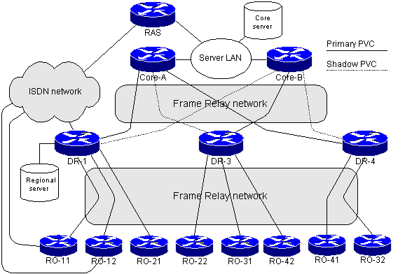

The exercise is part of case study #1 in Chapter 9, discussing large network with no hierarchical addressing structure. The network diagram is shown below:

Why would
a PVC failure to a remote office involve other remote offices in diffusing
computation ?
Whenever a PVC between distribution-layer router (for example, DR-1) and a remote office (for example, RO-11) fails, the distribution layer router starts diffusing computation as it has no feasible successor for the remote office routes. During the diffusing computation the distribution-layer router sends queries to all neighbors, including both core routers and all other remote offices connected to the same distribution-layer router.